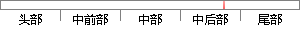

回到工作量证明算法，区块链通过共识算法来选举一位领导者来决定下一个区块的内容。
片段位置图

相似结果|
相似片段 1：是自发共识机制。这种自发，是没有经过选举的，也没有固定的时间。可以说，共识是很多的独立节点按照某些简单的规则自发形成。共识一共会经过这么几个步骤，第一，全网的每个节点会对每个交易进行独立的验证。第二，通过完成工作量证明算法的计算，将交易独立打包进区块。
|
※ 片段修改建议 ※
近似词参考：- 证明：证实
- 通过：经由过程
- 共识：共鸣
- 选举：推举
- 一位：一名
- 决定：决议 决意 抉择
系统自动生成语句：回到工作量证实算法，区块链经由过程共鸣算法来推举一名领导者来决议下一个区块的内容。
注：本片段修改建议为系统自动生成，仅供参考。